（1978年6月版DENONアクサアリーカタログ）
（1978年6月版DENONアクサアリーカタログ）
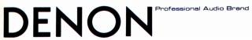
COLUMBIA（コロムビア）/DENON（ デンオン、デノン）
日本コロムビア（現 コロムビアミュージックエンタテインメント）の電機部門が分離独立した会社で、現在はディーアンドエムホールディングスの音響機器ブランドカンパニーの一つ。
もともとは円盤録音機を製作していた「日本電音機製作所」のブランドだったが、同社は1963年、日本コロムビア（現・コロムビアミュージックエンタテインメント）に吸収合併された。その後、日本コロムビアの放送事業等の業務用機器のブランドとなったが、やがてオーディオ全般に対するブランドとなった。2001年に日本コロムビアより分離独立、2002年に
日本マランツと株式移転によってディーアンドエムホールディングスを設立し、同社の完全子会社となり、今日に至る。
オーディオブランドとしてはDL-103に代表されるカートリッジやターンテーブルが有名であり、アンプやチューナー、スピーカー、ＣＤプレイヤーなど、オーディオ機器全般に製品を送り込んだ。またPCM録音機の実用化も同社である。
ヘッドフォンに関しては業務用機器を扱っていた関係か、「コロムビア」ブランドで1960年代にすでに発売していたが、「デンオン」ブランドへ移ったのは1980年代に入ってからである。その為か、1970年代後半の「デンオン」ブランドのアクセサリーカタログでは、「コロムビア」ブランドのヘッドフォンではなく、当時代理店を務めていた海外のPEERLESS （ピアレス）社のヘッドホンが掲載されていた。
（1978年6月版DENONアクサアリーカタログ）
DENON（
デンオン、デノン）の製品を以下のように分類する。（この分類は個人的な意見で、メーカーの分類ではありません）
なおデンオンの1970年より以前の製品については資料が現時点では手元にほとんどない。
�T.「コロムビア」ブランドの製品（〜1984年頃）
COLUMBIA（コロムビア）のヘッドフォンは「SH」の型番を使っていた。(その他、電子楽器用ヘッドフォンで「EH」の型番がある）他社調達のOEM感が丸出しの物が多い。
�@〜1970年代初頭の製品
SH-21 SH-31 SH-33 SH-35 SH-51 SH-55
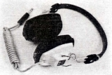
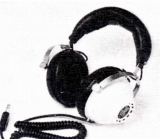
(左 SH-21 右 SH-55)
�A1970年代中盤以降の製品
SH-28 SH-38 SH-70 （動電全面駆動型） SH-90
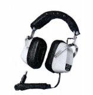
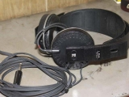
(左 SH-38 右 SH-90)＊コロムビアのヘッドフォンでは、SH-10という機種をネットオークションで見かけた。詳細は不明だが外観はSH-21に似ていた。
�U.「デンオン」ブランドの製品（1980〜）
デンオンブランドになり、「AH」の型番を使うようになった。当初は独自のデザインの製品が多かったが、やがて他社と似たようなデザインになっていった。なお1984年頃までコロムビアブランドの製品は販売が続き、デンオンブランドの初期製品より遅くまで販売された。
�@ブランド移行初期の製品
「High-M.F.（ハイム)」と呼ぶ新開発の高分子フィルムを採用した「Pro moni」シリーズでスタートした。なお「Pro
moni」の表記はこの後の第４世代モデルまでは使われていた。
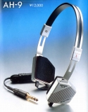
(AH-9)
�A第２世代の製品
「出力端子」を装備(AH-33は除く）したシリーズ
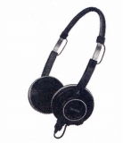
(AH-77)
�BAH-Pシリーズ
インナーイヤ型を含む小型・軽量機のシリーズ。後半の機種はユニークなペットネームを持つものがある。
AH-P1 AH-P2 AH-P3 AH-P4 AH-P5 AH-P6 AH-P7 AH-P10
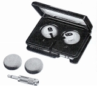
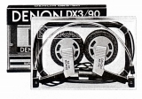
(左 AH-P1 右 AH-P5)
�C第３世代の製品（AH-Dシリーズ）
小型・軽量機ベースの最後の世代。中級機以上の機種はFMFと呼ぶマイカを発泡成形した平面振動板を採用。またAH-D6、AH-D5LC、AH-D7LCは当時DENONが他のコンポ（例DL-103LC�U）で多用したLC-OFCをボイスコイル等に採用した。
AH-D1 AH-D3 AH-D4 AH-D6
AH-D5LC AH-D7LC
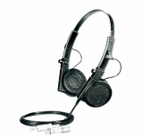
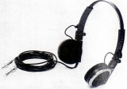
(左 AH-D6 右 AH-D7LC)
�Dインナーイヤー型（AH-C,Tシリーズ）
第二世代より音漏れ防止と低音再生向上を目指し、密閉型を採用している。密閉型による遮音効果はオープンエア型の半分程だったらしい。第三世代より上位機種にネオジウム磁石が採用された。
AH-C2 AH-C3 AH-C4 AH-C5 AH-C6
AH-C30 AH-C50 AH-C70
AH-C33 AH-C53 AH-C73
AH-C15 AH-C35V AH-C55V
（タイマー付き） AH-T7
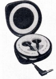
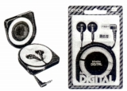
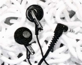
(左 AH-C6 中央 AH-C30 右 AH-C73)
�E第4世代の製品（AH-Dシリーズその2）
デンオン独自のデザインではなく、他社（SONY)と似たようなデザインとなってからの製品。
AH-D05 AH-D100 AH-D300 AH-D500 AH-D700 AH-D900
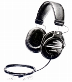
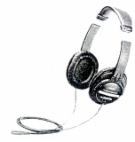
�E第5世代の製品（AH-Dシリーズその3）
AH-D350 AH-D550 AH-D650 AH-D750 AH-D950
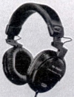
(AH-D950)
�F第6世代の製品（AH-Dシリーズその4）
AH-D230-K AH-D330-K AH-D530 AH-D630 AH-D730 AH-D930
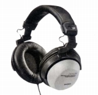
(AH-D930)
�G第7世代の製品（AH-Ｇシリーズ）
抗菌仕様の普及価格帯機。
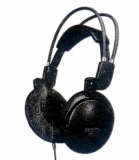
(AH-G99)